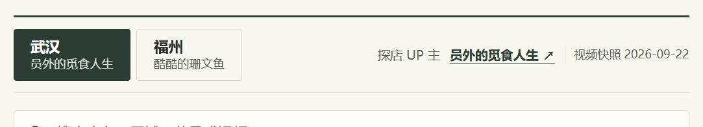
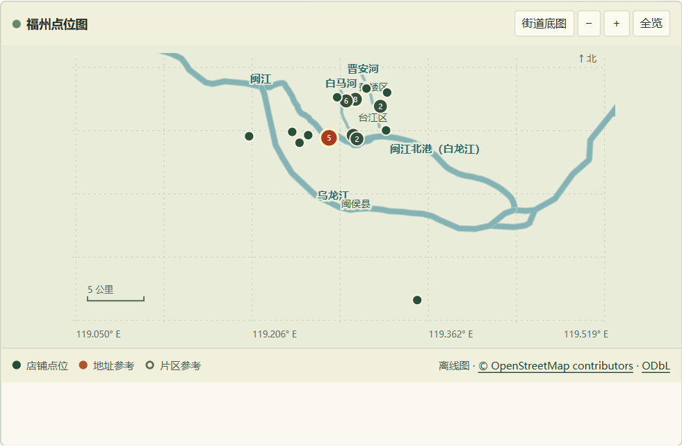
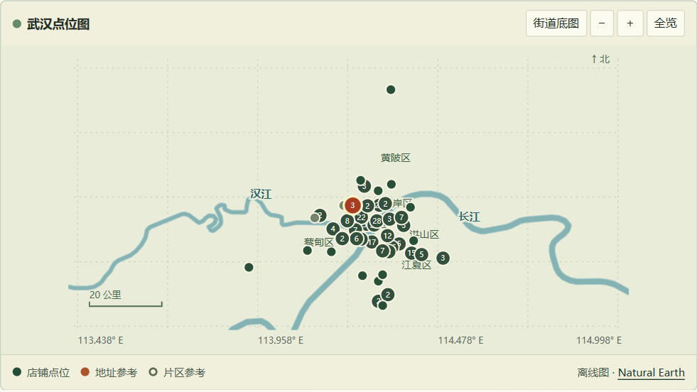
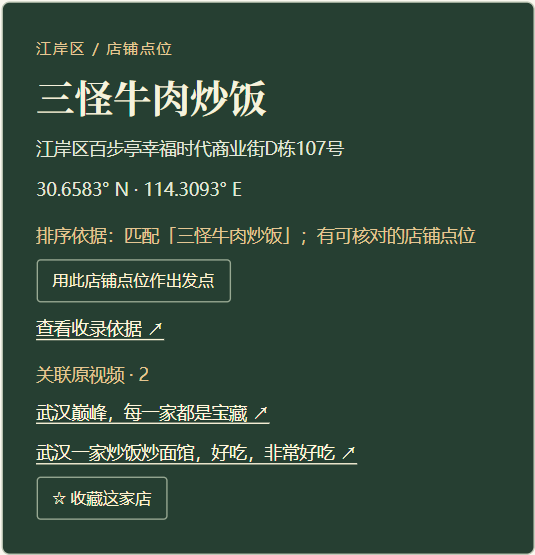
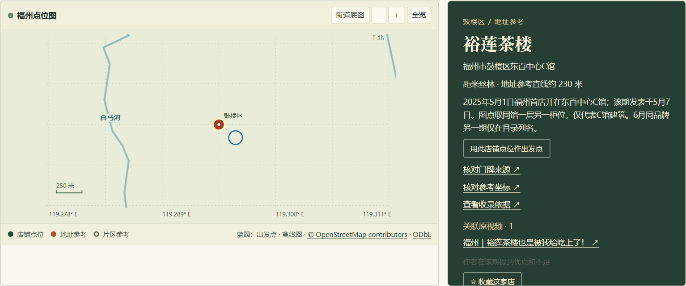
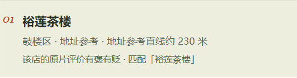
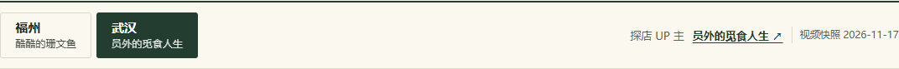
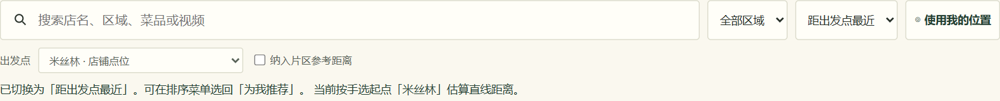
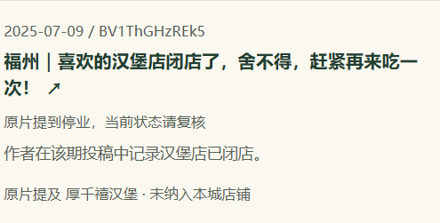

武汉在左且已选中，视频快照为 2026-09-22。该历史目录含 342 条视频。
把探店视频放回城市地图。读者选定作者和出发点，查看附近哪些店有可靠地址，再回原片核对作者点了什么、具体怎么评价。


作品实机离线地图节选。福州水系 © OpenStreetMap contributors（ODbL）；武汉水系来自 Natural Earth。
一条视频能说明作者吃了什么，却未必给出分店地址。习惯收藏视频的人，临时找饭店时仍要逐条回想店名、区分分店，再打开地图。
“通过地图可以方便查看地点远近，同时可以点击具体地点后进入相应的up主视频，方便查看测评。”
以设备位置或熟悉的店作起点，按远近查看去哪里方便，再按口味筛选。
出发前即可在福州手选本地地标。设备在另一个城市时也能查看目的地周边。
一个地点可以关联多期原片，也可以从一条视频返回其已核的多个店铺。

打开首页选择福州，以米丝林作出发点，搜索“裕莲茶楼”。页面给出约 230 米的直线距离，并把终点标注为“地址参考”。


作者公开投稿构成视频目录。门店另按城市、店名、分店和地址证据核实。目录中的异地探访、生活记录与不明店址都有独立的去处。
| 快照口径 | 福州 | 武汉 |
|---|---|---|
| 已核投稿页数 | 8 | 9 |
| 目录视频（BV 去重） | 293 | 359，含 1 条合作稿 |
| 关联本地条目的不同视频 | 115 | 306 |
| 本地店铺或品牌条目 | 115 | 326 |
| 商户点 / 同址或门牌参考 | 32 / 1 | 203 / 42 |
| 片区参考 / 待定位 | 3 / 79 | 67 / 14 |
武汉沿用历史项目的 326 个地点。11 月 17 日核对全部 359 条投稿，新出现的 17 条先进入视频目录。
293 个原片简介逐条核对后，115 个视频与 115 个本地条目形成 123 组关联。去重视频数、店铺数和关联数分别统计。
保留原片而留空经纬度。福州有 79 个条目暂未定位；明确负评的 10 期、提到历史停业的 2 期只保留目录记录。
先按所选城市、关键词、区域和收藏筛选，再对入选店铺计算分数。软件展示命中口味、距离或可查点位等理由，作者的体验可由原片核对。
| 得分项 | 程序采用的规则 |
|---|---|
| 词项 | 每个不同命中词 +4，最多两个 |
| 直线距离 | ≤1 / 3 / 8 / 15 km 分别 +5 / +3 / +2 / +1 |
| 位置证据 | 商户点 +3，建筑或门牌 +2，片区 +1 |
| 原片可回看 | 至少有一期无警示关联原片 +1 |
| 评价提示 | 全部关联原片都是负面或停业提示时 −8 |
关键词匹配店名、地址、区域以及可归到单店的原片标题。全部分数相同时按快照顺序展示。
搜索词“裕莲茶楼”命中 +4；约 230 米 +5；建筑地址参考 +2；单店关联原片评价有褒有贬，不加原片分。
4 + 5 + 2 = 11
坐标统一为 WGS84，使用 Haversine 大圆距离。片区起点或片区终点不参加距离加分，勾选后可查看参考距离。真实步行时间还受道路和过江条件影响。
联网核实是资料准备步骤。比赛演示与日常查询共用已校验的城市快照，浏览器可直接完成搜索、定位、排序和收藏。
保留 BV、日期、必要的店名和依据链接。取数时把作者投稿与作者点赞区分开。
检验 BV 唯一性、门店关联、地理范围与精度。只有商场建筑或流动摊片区依据时，单独标明相应等级。
原生 HTML、CSS、JavaScript 和 Python 标准库。应用启动与本地核心流程无需模型密钥。
门店的 GCJ-02 或百度 BD09MC 坐标换算到近似 WGS84。福州的补充商户点保留商户 UID 与原始坐标，以便事后复核。
设备定位按需请求，仅在当前页面内存计算。收藏和个人复核记录按城市保存在浏览器，本地服务仅绑定 127.0.0.1。
随包河流和店铺点可离线显示。主动打开街道底图后，请求的瓦片范围可能反映用户查看的区域。底图加载失败时恢复离线图。
选手确定要解决的任务、指定作者并给出试用反馈。Codex 辅助实现、查找反例及执行测试。下表保留选手原话的短摘，工程动作另列。
| 核心功能 | 选手指令或选择（摘录） | 迭代中遇到的具体问题与处理 | 可复验产物 |
|---|---|---|---|
| 区域与作者目录 | “选择的UP主列表以区域划分，原有的是武汉，并列另外加一个福州的UP主页” | 匿名目录服务受限，主页又混有最近点赞。改从指定作者的“投稿”页读取；福州八页的 293 个 BV 去重后与主页计数相符。 | 切换两座城市，作者名、目录和门店同步变化。8ff8ceb → 6767def |
| 定位与距离 | “通过地图可以方便查看地点远近” 原武汉项目需求 | 设备可能在外地或未获定位权限。引入手选本城起点，区分门店、建筑和片区；试用者选择“保留现状，在切换时明确提示”。 | 手选起点后提示已切换到距离排序；改回“为我推荐”后提示清除。fca9c4d |
| 快照与默认入口 | “武汉的视频快照时间也改为11月17日，同时把福州放在第一个，武汉放在第二个。” | 反馈前武汉仍显示 9 月 22 日。重新比对九页的 BV、标题、日期，补录 17 条；默认城市和按钮顺序一起更新。 | 打开首页先看到福州。武汉页显示 359 条视频和新快照日期。887ef9e |
原始武汉采集成果作为输入复用。本次新增双城目录、福州证据核验和本地排序界面，并按选手反馈更新武汉目录。运行时的榜单由可检查的规则生成。
选手指出武汉日期和首屏顺序。把日期作为查询范围来理解，便产生两项可验证的改动：从作者目录补进新增稿件，并由实际按钮顺序决定默认城市。

武汉在左且已选中，视频快照为 2026-09-22。该历史目录含 342 条视频。

福州移到左侧；通过武汉直达链接进入时仍选中武汉。武汉快照显示 2026-11-17。
将九页 359 条记录逐一与项目目录比对。旧 342 条的 BV、标题和发布日期都可对齐；最早一条新增投稿发布于 9 月 24 日，最新一条发布于 11 月 14 日。
新收录的 17 条可从武汉视频目录回看，店址待核。选手对这批投稿的后续展示选择“沿用现有展示”。原有 326 处地点保持 9 月的核验口径。
手选起点或同意设备定位会优先显示最近地点。原界面能更改排序，却没有解释为什么顺序发生了变化。选手对 AI 提出的不同改法作了选择。
“目前点「使用我的位置」会自动从「为我推荐」切换到「距出发点最近」，距离会压过口味。作为参赛者，你希望怎么改？”
“保留现状，在切换时明确提示”
在旧实现上选择起点，状态栏只显示已手选，要求包含排序切换提示的验收失败。修改后，在排序自动改变时解释原因；使用者切回“为我推荐”后，旧提示清除。
针对武汉 17 条新片，AI 给出“可单独筛选”“只加待核提示”“沿用现有展示”三个选项。选手选择第三项，最终沿用未关联视频的目录提示。

验收同时覆盖数据与操作。数据检查使用 Python 标准库，交互检查从真实 Edge 的干净浏览器上下文启动。
一条视频同时介绍厚千禧汉堡与 CARPORT 咖啡。搜“汉堡”可找回原片；店铺结果排除仅因同片出现的咖啡店。与历史闭店有关的原片仍能从目录查到。

模拟浏览器拒绝定位，页面提示手选起点。选米丝林后自身为 0 米；裕莲茶楼为建筑参考约 230 米；银河隧道只有勾选片区估距后才展示距离。
只把快照中关联到同一 BV 的地点列为已关联。用户输入的待核线索保留在其浏览器；可复查、删除，不回写两城的发布文件。
验收范围 覆盖 BV 唯一性、四级位置约束、福州快照离线重建、收藏刷新与跨城隔离。在预装 Git、Edge 和 Playwright 的本机，从干净目录跑通指定版本用时 2.154 秒（自动化耗时，不含环境安装与人工操作）。完整记录见 docs/复现验收.md。
在装有 Python 3.10 或更高版本的电脑解压源码，打开项目根目录。系统浏览器与随包文件即可完成核心演示。
Windows 双击“启动.cmd”，或运行下列命令。浏览器访问 http://127.0.0.1:8794/。
福州选米丝林、搜裕莲茶楼；清空后搜厚千禧汉堡查看历史提示。切换武汉检查快照日期，再搜三怪牛肉炒饭。
另开终端运行标准库测试。包含福州快照重建的比对。可选浏览器测试另外需要 Playwright 和 Microsoft Edge。
运行核心功能无需 API 密钥、环境变量或远程模型。推荐计算、数据转换与边界判断可在源码查看。打开原视频或街道底图需要网络。
探店视频属于原作者，工具提供出处和必要的地点事实。武汉河流来自 Natural Earth（公共领域）；福州水系来自 Geofabrik 的 OSM 数据，遵循 ODbL。Leaflet 随附 BSD 许可证。
作品源码根目录 README.md。数据来源和逐点依据位于 docs/，本机安装、启动与复核命令可直接使用。